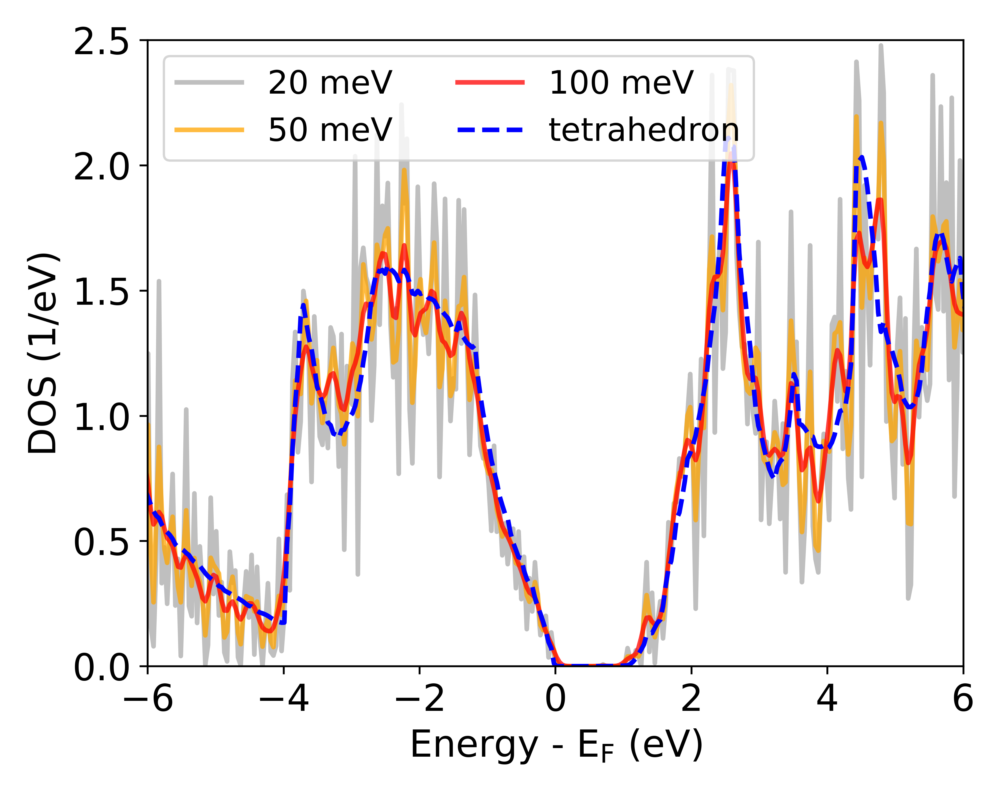
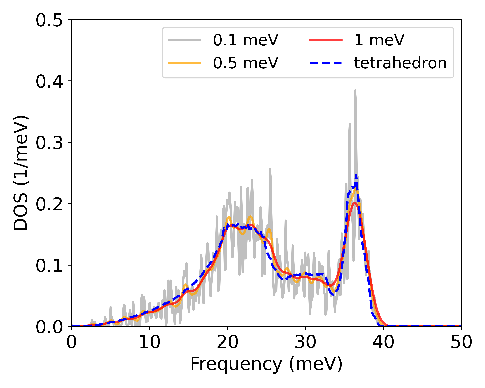

DOS of Quasiparticle
This tutorial uses cal_mode: dos in QTrans to calculate electronic
and phonon densities of states (DOS).
Electronic DOS of GaAs
This tutorial illustrates the calculation of the electronic density of states (DOS) for the semiconductor GaAs using two approaches: the default smearing method and the tetrahedron method.
The GaAs tutorial is located in tutorials/GaAs/openmx/ele-dos/.
All necessary data files are available in tutorials/GaAs/openmx/data/.
The directory contains separate examples for the two integration methods:
cd tutorials/GaAs/openmx/ele-dos/ && ls
smearing/ tetrahedron/
1. Smearing method
We begin by performing the calculation with the default smearing method.
Enter smearing/, where you will find the input file input-smearing.yaml and
the ref/ folder containing reference outputs:
cd smearing/ && ls
input-smearing.yaml ref/
In the input file input-smearing.yaml, we choose a smearing of 50 meV
(dos_smear: 50.0) and use a 20x20x20 k-point grid (dos_mesh_size: [20,20,20]).
A Gaussian kernel (dos_gauss_type: 0) approximates the delta function.
Set dos_qp: electron to select the electronic DOS.
The energy range for the DOS calculation is set from -10 eV to 10 eV via
dos_erange: [-10,10].
Note that this energy range is defined relative to the calculated Fermi level.
The complete input file is:
basic:
cal_mode: 'dos'
graph_data_path_uc: ../../data/graph_data.npz
nao_max: 19
Ham_type: openmx
outdir: './'
dos:
dos_qp: 'electron'
dos_npoints: 500
dos_mesh_size: [20,20,20]
dos_smear: 50.0
dos_gauss_type: 0
dos_erange: [-10,10]
Run QTrans from this directory:
mpirun -np 8 QTrans_run --config ./input-smearing.yaml > k20_smearing50.out
At the end of the run, you should see output like this:
######################################### DOS Calculation ##########################################
Calculate density of states for electron.
The system is an insulator, the VBM energy of -4.7764 eV is chosen as the reference energy.
QTrans automatically calculates the Fermi level when cal_mode: 'dos' is set. For metals,
it outputs the actual Fermi level, while for insulators and semiconductors, it returns the energy of the
valence band maximum (VBM).
In this case, the calculated VBM energy is -4.7764 eV.
The resulting DOS is saved in a file named electron_dos.dat in the current directory,
with the following format:
# Energy(eV) DOS(1/eV)
-1.00000000e+01 1.89442710e-11
-9.95991984e+00 5.58089977e-15
-9.91983968e+00 4.64104623e-19
...
...
The first column in the file represents the energy, and the second column contains the calculated DOS. For collinear magnetic materials, the file includes three columns: the energy, spin-up DOS, and spin-down DOS. The calculated DOS is shown in Figure 1. As can be observed, a larger smearing value results in a smoother DOS curve, but it also leads to a loss of fine spectral details.


Figure 1: Calculated electronic DOS of GaAs using a 20x20x20 k-point grid. The Fermi level is aligned with the valence band maximum (VBM).
2. Tetrahedron method
The tetrahedron method divides the Brillouin zone into small tetrahedra and performs analytical integration within each. It enables accurate DOS calculation without relying on smearing parameters and is especially useful for capturing fine features near the Fermi level in metallic systems. However, the tetrahedron method requires more computational effort and is sensitive to the density and uniformity of the k-point mesh.
Next, calculate the DOS using the tetrahedron method.
Enter tetrahedron/, where you will find the input file input-tetra.yaml and
the ref/ folder containing reference outputs:
cd ..
cd tetrahedron/ && ls
input-tetra.yaml ref/
To activate this method, set tetra_integral to True in the advanced block.
The DOS integration itself does not use a smearing kernel. For electronic DOS,
smearing settings can still affect the reference Fermi-level calculation.
The complete input file is:
basic:
cal_mode: 'dos'
graph_data_path_uc: ../../data/graph_data.npz
nao_max: 19
Ham_type: openmx
outdir: './'
advanced:
tetra_integral: True
dos:
dos_qp: 'electron'
dos_npoints: 500
dos_mesh_size: [20,20,20]
dos_erange: [-10,10]
Run QTrans from this directory:
mpirun -np 8 QTrans_run --config ./input-tetra.yaml > k20_tetra.out 2>&1
The DOS data will be saved in a file named electron_dos.dat.
The resulting DOS is plotted in Figure 1.
The DOS curve calculated using the tetrahedron method is generally smoother than raw discrete data but differs fundamentally from smearing methods. It retains sharp features near band edges and Van Hove singularities without the artificial broadening of a smearing kernel. Converge the mesh for either method before comparing fine spectral features.
Phonon DOS of Al
This tutorial illustrates the calculation of the phonon density of states (DOS) for the metal aluminum using two approaches: the default smearing method and the tetrahedron method.
The Al tutorial is located in tutorials/Al/openmx/ph-dos/.
All necessary data files are available in tutorials/Al/openmx/data/.
The directory contains separate examples for the two integration methods:
cd tutorials/Al/openmx/ph-dos/ && ls
smearing/ tetrahedron/
1. Smearing method
We begin by performing the calculation with the default smearing method.
Enter smearing/, where you will find the input file input-smearing.yaml and
the ref/ folder containing reference outputs:
cd smearing/ && ls
input-smearing.yaml ref/
Set dos_qp: phonon in input-smearing.yaml to select the phonon DOS.
You must also add a phonon block with the necessary settings to compute the dynamical matrix.
Since the phonon energy range is typically on the order of tens of meV—much smaller than that of electrons—we
need to use a smaller smearing value. We choose a smearing of 0.5 meV
(dos_smear: 0.5) and use a 20x20x20 q-point grid (dos_mesh_size: [20,20,20]) in this tutorial.
The energy range for the DOS calculation is set from 0 to 0.050 eV via
dos_erange: [0,0.050]. This input range is in eV, whereas the phonon
DOS output uses meV and 1/meV for the energy and DOS, respectively.
The complete input file is:
basic:
cal_mode: 'dos'
graph_data_path_uc: ../../data/graph_data.npz
nao_max: 14
Ham_type: openmx
outdir: './'
phonon:
supercell_matrix: [[3.0, 0.0, 0.0], [0, 3, 0], [0, 0, 3]]
unitcell_filename: ../../data/Al-pri.vasp
force_infos_filename: ../../data/FORCE_SETS
dos:
dos_qp: 'phonon'
dos_npoints: 500
dos_mesh_size: [20,20,20]
dos_smear: 0.5
dos_gauss_type: 0
dos_erange: [0,0.050]
Run QTrans from this directory:
mpirun -np 8 QTrans_run --config ./input-smearing.yaml > q20_smearing0.5.out
The resulting DOS is saved in a file named phonon_dos.dat in the current directory,
with the following format:
# Energy(meV) DOS(1/meV)
0.00000000e+00 4.23142188e-04
1.00200401e-01 4.06485344e-04
2.00400802e-01 3.60346664e-04
...
...
The first column in the file represents the phonon energy, and the second column contains the calculated DOS. The calculated DOS is shown in Figure 2.


Figure 2: Calculated phonon DOS of Al using a 20x20x20 q-point grid.
2. Tetrahedron method
Next, calculate the DOS using the tetrahedron method.
Enter tetrahedron/, where you will find the input file input-tetra.yaml and
the ref/ folder containing reference outputs:
cd ..
cd tetrahedron/ && ls
input-tetra.yaml ref/
To activate this method, set tetra_integral to True in the advanced block.
The phonon DOS is integrated without a smearing kernel.
The complete input file is:
basic:
cal_mode: 'dos'
graph_data_path_uc: ../../data/graph_data.npz
nao_max: 14
Ham_type: openmx
outdir: './'
phonon:
supercell_matrix: [[3.0, 0.0, 0.0], [0, 3, 0], [0, 0, 3]]
unitcell_filename: ../../data/Al-pri.vasp
force_infos_filename: ../../data/FORCE_SETS
advanced:
tetra_integral: True
dos:
dos_qp: 'phonon'
dos_npoints: 500
dos_mesh_size: [20,20,20]
dos_erange: [0,0.050]
Run QTrans from this directory:
mpirun -np 8 QTrans_run --config ./input-tetra.yaml > q20_tetra.out 2>&1
The DOS data will also be saved in a file named phonon_dos.dat.
The resulting DOS is plotted in Figure 2.